MemVal capacity run — ahn_capacity_run
1 arms · generated 2026-09-06 21:37 · every link is relative to this directory, so the run tree stays the source of truth.
Profiles
| arm | Continual retention | One-shot learning | Pattern completion | Sequence disambiguation | Serial order |
|---|---|---|---|---|---|
| AHN (reference) | 0.957 cov 90% | 0.868 cov 75% | 0.622 cov 100% | 0.599 cov 100% | 0.673 cov 30% |
By arm
AHN (reference) AsymmetricHopfieldNetwork
Capacity profile
Main figures
The figures that answer each capacity's promise, in reading order. Everything else is under Supplementary. Declared in MAIN_FIGURES in bin/build_results_index.py.
Continual retention

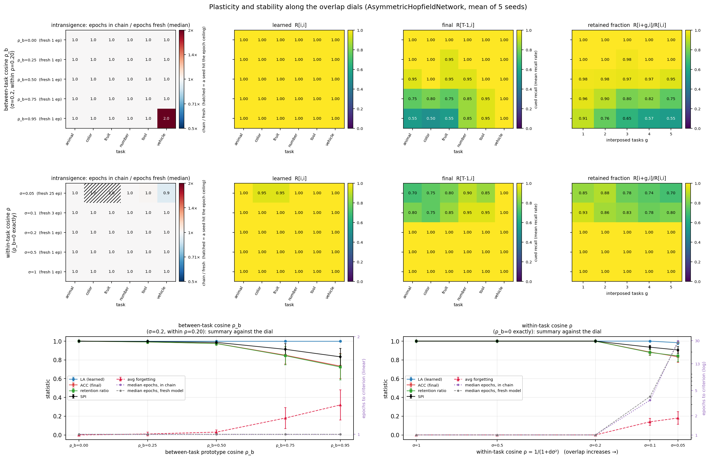
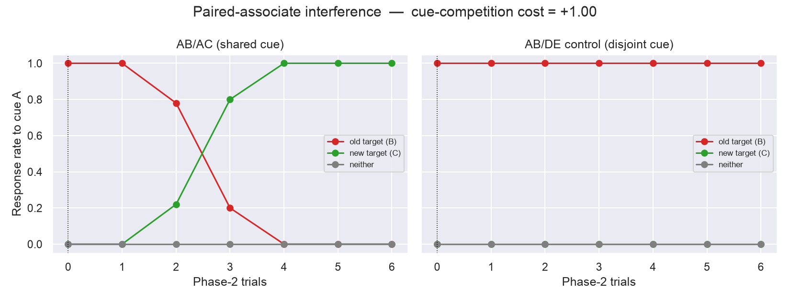

One-shot learning
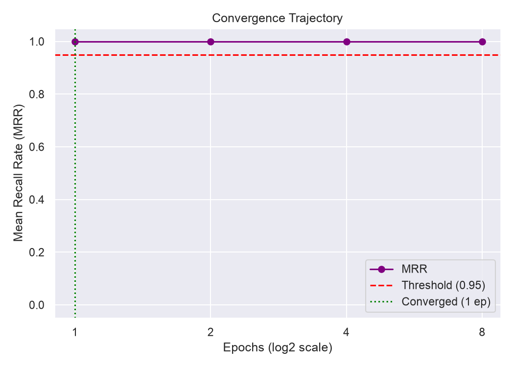
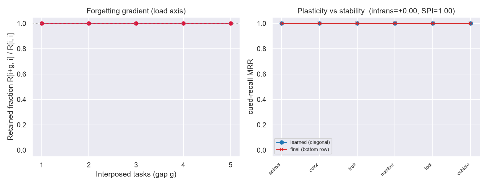
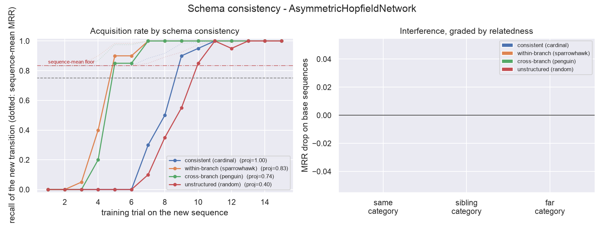
Main set not yet decided for: Pattern completion, Sequence disambiguation, Serial order.
Supplementary — Spatial suite

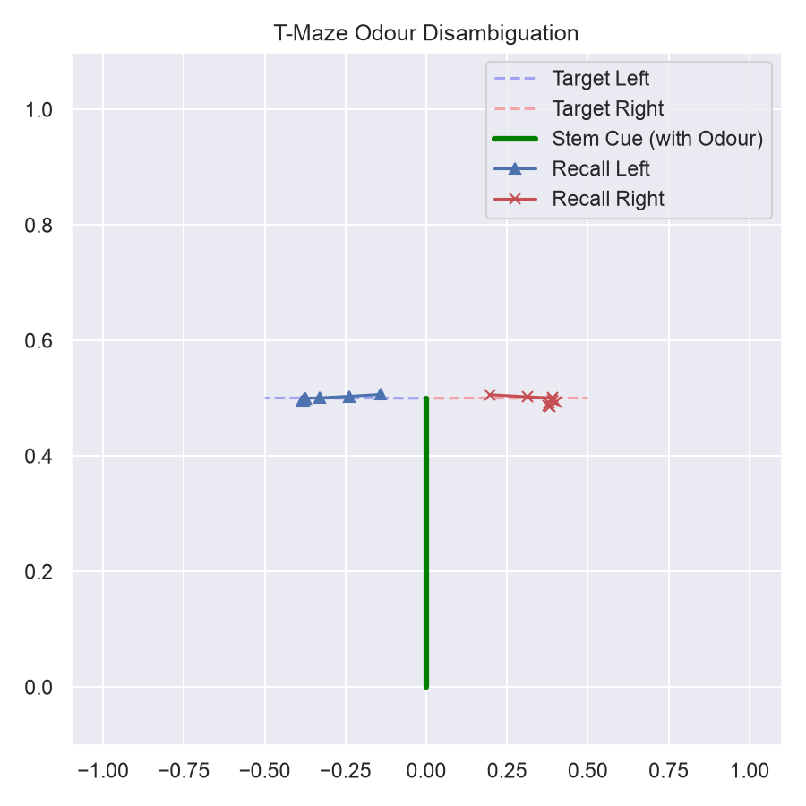
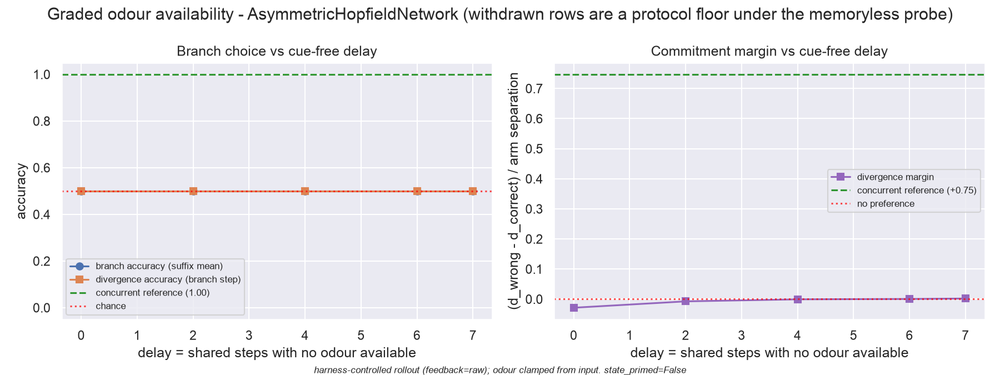
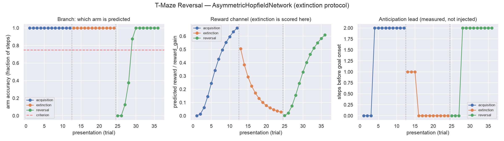
Supplementary — Symbolic suite
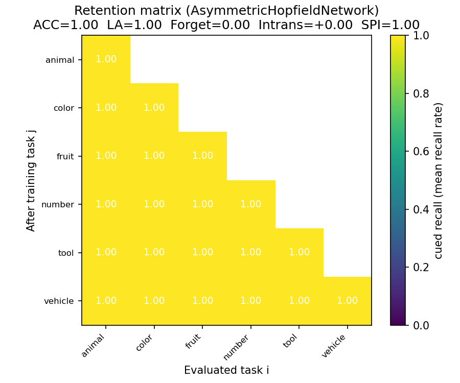
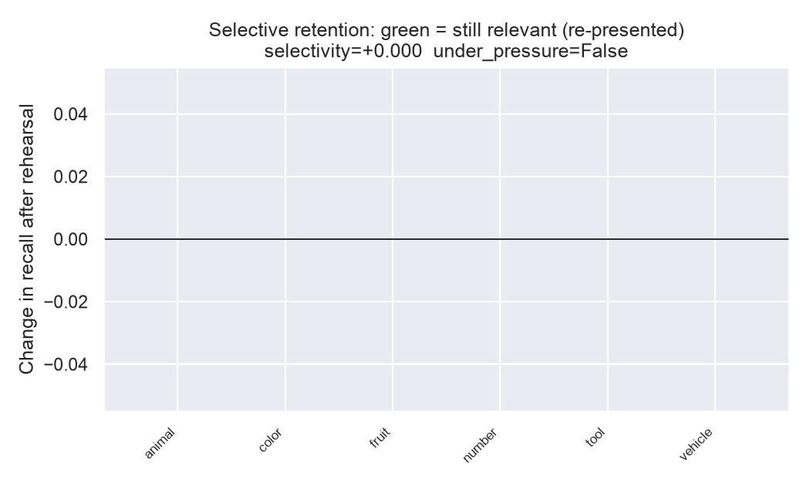

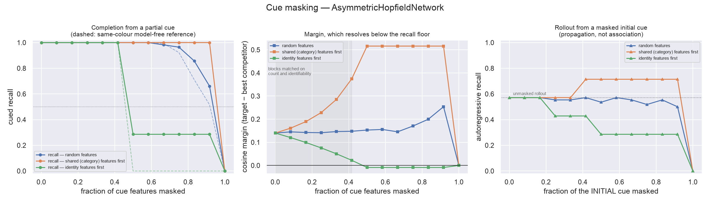
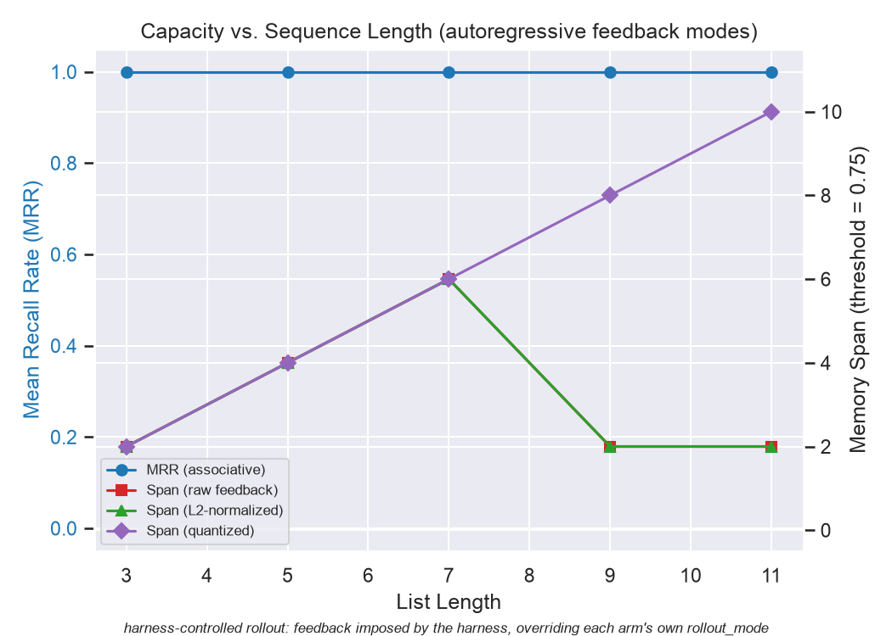
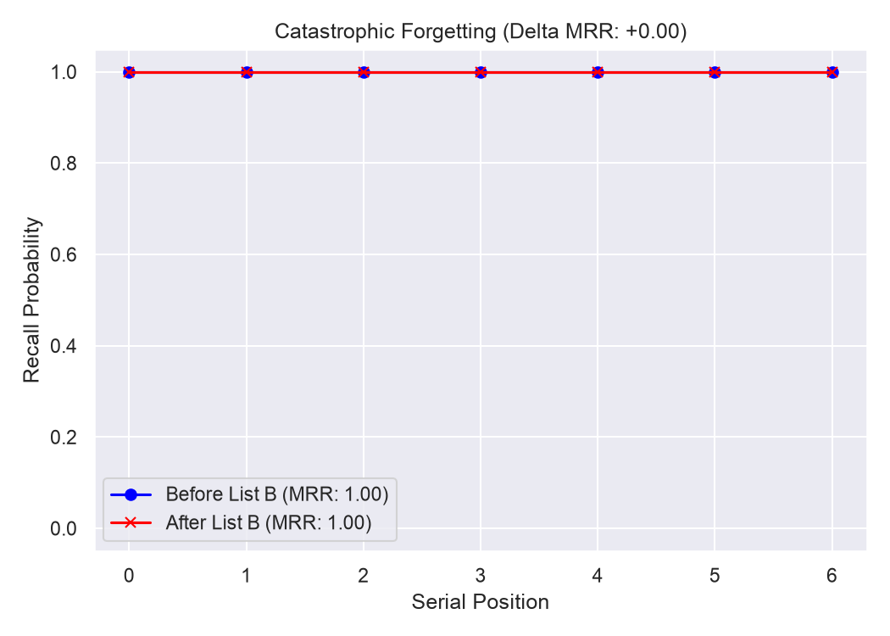
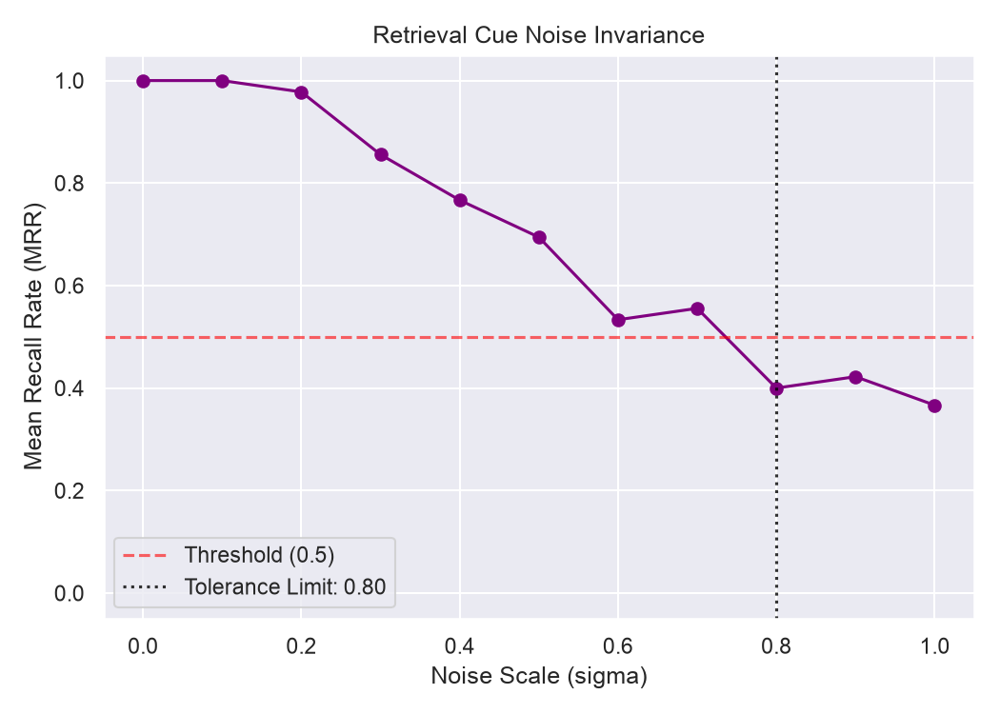
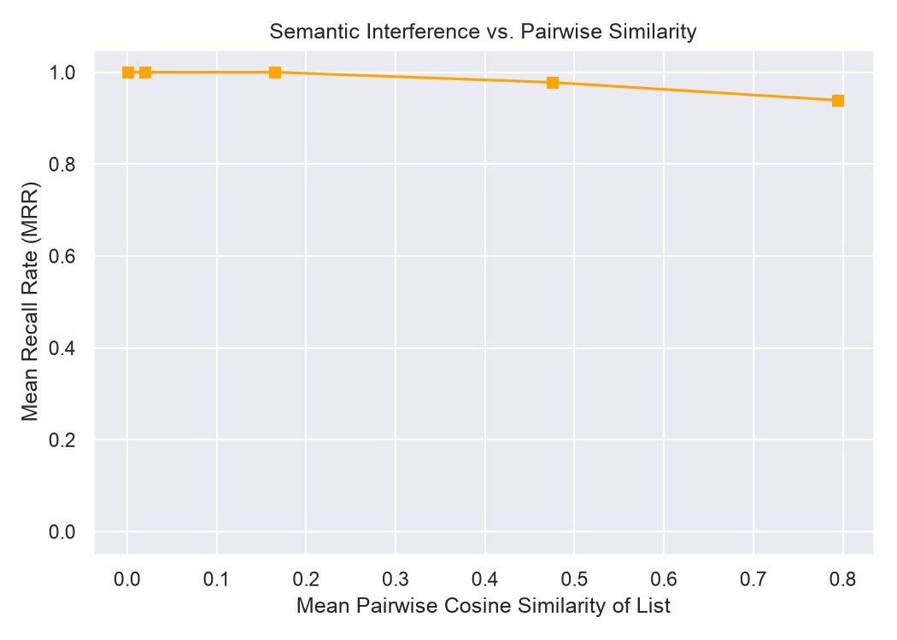
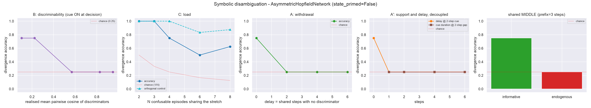
Supplementary — Streamed regime
No plots — the suite reported not_applicable. For an arm that does not declare the capability this is a capability gap, never a score of zero.
Schema, focused protocol
The suite default (extended) is valid for acquisition only; interference and prefix-recall are valid only here.